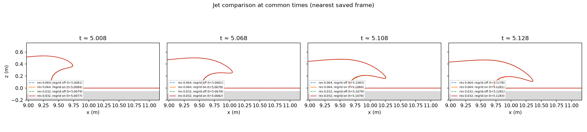
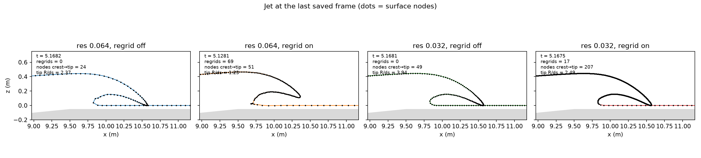
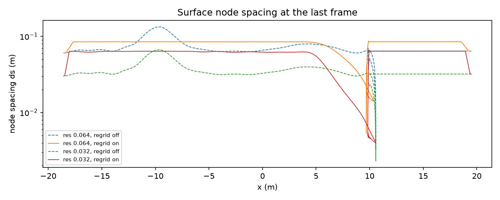
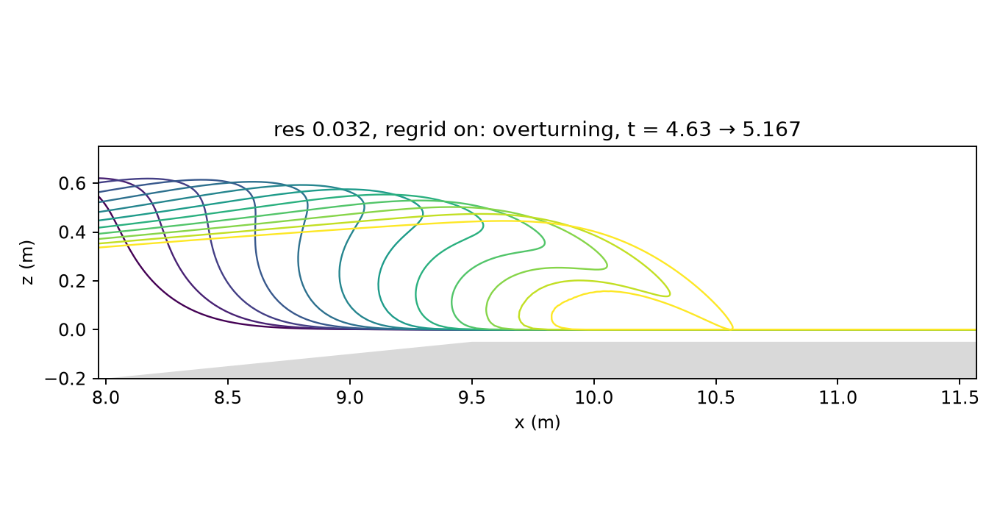
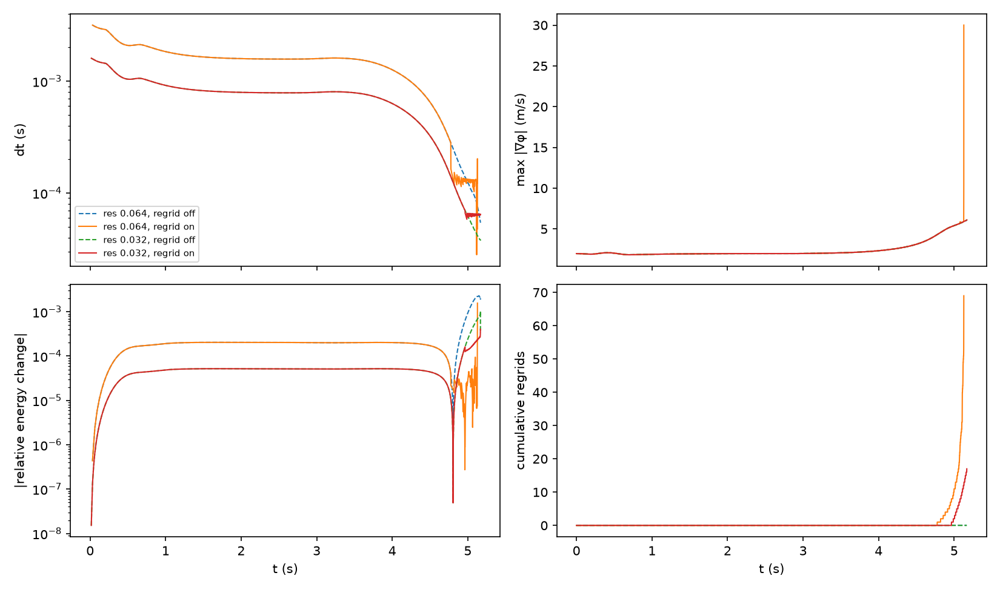
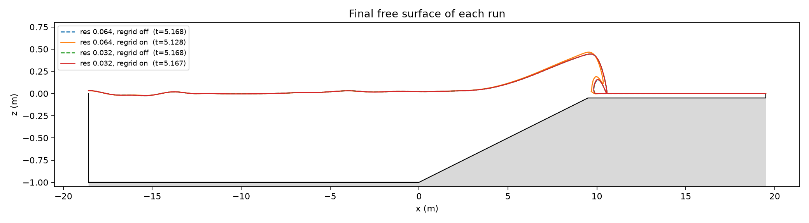

Surftank BEM · Aidan_shallow case · 23 November 2026
Does doubling resolution, with regridding, describe the plunging jet better?
A solitary wave (a/H = 0.6, H = 1 m) shoals on a 1:10 slope onto a 0.05 m shelf and plunges. Aidan found the jets poorly described. Four runs separate two changes: free-surface resolution 0.064 → 0.032 m, and upstream surftank's free-surface node regridding (shift_by_curve2d_normu, a = 16, thresholds 10 / 1.5, buffer 10).
Two-dimensional potential-flow BEM; runs end when the jet touches down. A single connected free surface cannot continue through reconnection, so every run stops near t ≈ 5.17 s. All runs ran on Unity (16 OpenMP threads) with the standalone Fortran port of surftank. In all four runs the two vertical walls are respaced every step (upstream linearize_uniform). Without it, the 0.032 m run collapses a left-wall panel at t ≈ 1.88 s.
Short answer
- The jet's path is already converged at 0.064 m. At touchdown the tip position agrees to 2 mm (x = 10.569–10.571 m) and the overhang to 2.5 % (0.92–0.94 m) across the three runs that reach touchdown.
- What changes is how many nodes describe the jet. Without regridding, the Lagrangian nodes stretch along the jet as it lengthens: median spacing reaches 0.049 m at 0.064 m resolution, and still 0.025 m at 0.032 m. With regridding at 0.032 m, the jet carries 207 nodes from crest to tip at a median spacing of 5 mm, about 10× finer than the unregridded 0.064 m run.
- The tip itself remains marginal in every run. The tip radius of curvature (≈ 1 cm) spans only about 2.5–4 panel lengths, so features at the tip scale are not converged.
- Regridding at 0.064 m is not robust. It regrids almost every step late in the overturn and fails at t = 5.128 s, before touchdown. At 0.032 m it needed only 17 regrids.
- Doubling resolution improves energy conservation 4–6×, from about 1.6–1.9 × 10−3 to 3–4 × 10−4 relative drift. It costs roughly 20× more wall time.
Runs
| Run | Surface nodes | Final t (s) | Regrids | Tip x (m) | Overhang (m) | Nodes crest→tip | Jet spacing median / max (m) | Tip R (m) | R / local spacing | Rel. energy drift | Wall time |
|---|---|---|---|---|---|---|---|---|---|---|---|
| 0.064 m, regrid off | 595 | 5.1682 | 0 | 10.5708 | 0.923 | 24 | 0.049 / 0.066 | 0.0128 | 2.4 | 1.9e-3 | 2 min |
| 0.064 m, regrid on | 595 | 5.1281* | 69 | 10.3612* | 0.816* | 51 | 0.017 / 0.024 | 0.0177 | 1.2 | 1.6e-3 | 2 min |
| 0.032 m, regrid off | 1190 | 5.1681 | 0 | 10.5710 | 0.944 | 49 | 0.025 / 0.033 | 0.0125 | 3.9 | 3.4e-4 | 45 min |
| 0.032 m, regrid on | 1190 | 5.1675 | 17 | 10.5693 | 0.937 | 207 | 0.005 / 0.007 | 0.0099 | 2.5 | 4.0e-4 | 33 min |
* Stopped 0.04 s before touchdown, when a regrid produced a degenerate panel; the tip was still 0.12 m above the surface, so its jet metrics are not directly comparable. All four runs first overturn at t ≈ 4.769 s. Relative volume change is below 1.5 × 10−4 in every run. Runs were on different Unity node types, so wall times are indicative only.
The jet at matching times



Overturning and run diagnostics



Method and caveats
The Fortran port reproduces the active solver of Aidan_shallow.m: piecewise-linear BEM, five-point quartic surface derivatives, and second-order Lagrangian Taylor stepping at CFL 0.1. Free-surface regridding is a direct port of upstream bdry_handle_regrid.m (nodeshift, shift_by_curve2d_normu, nodes 5 to N−4, buffer reweighting). After each step the BEM is re-solved and the weighted segment lengths are tested; if either threshold fails, nodes and φ are redistributed along cubic splines and the BEM is solved again. Against an independent scipy port of the MATLAB routines, the port agrees to ≤ 10−9.
Splines assume MATLAB csape's default end slopes (the cubic through the four nearest points); this has not been checked against MATLAB itself. As upstream, the threshold test includes the buffer segments. After a regrid the saved nodes no longer follow fluid particles. Jet-tip metrics come from single nodes and are sensitive at the few-millimetre level.
Plots: analyze_jets.py · numbers: summary.json. Raw surface histories stay on Unity.